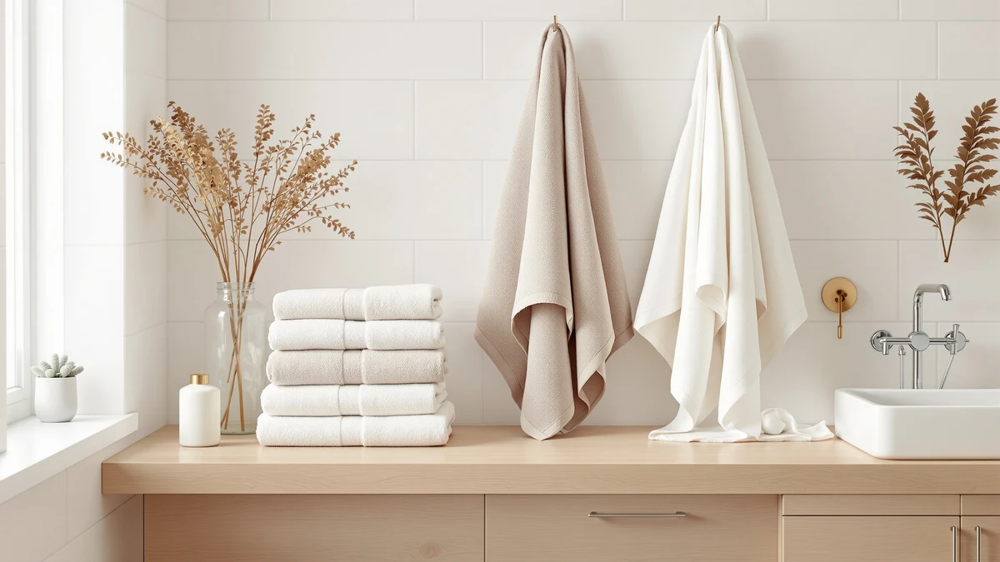

The Best Turkish Bath Sheets (2026)
Prices and picks verified as of August 2026. Independent, reader-supported reviews.


Quick Answer
The Lincoln & Palm 3 Piece is the best pick for most shoppers hunting the best Turkish bath sheets: a $39.99 three-piece cotton-blend set with the weight and hand of true Turkish toweling. If you want a plusher, more absorbent feel and don't mind paying more, the Cariloha Bamboo Viscose Bath Towels at $44.00 is our runner-up.
Our pick: Lincoln & Palm 3 Piece — $39.99 Check Price on Amazon
Bottom line: our top pick is the Lincoln & Palm 3 Piece Turkish Towels Set at $39.99. The best budget option is the Antfuny Turkish Beach Towels Vacation Essentials Quick Dry at $9.99.
Things to Know Before You Buy
- "Turkish" describes the weave, not only the origin. True Turkish toweling uses long-fiber cotton spun into a flatter, denser terry loop than a typical mass-market towel, and that weave is what separates the best Turkish bath sheets from towels that only borrow the name.
- Size varies more than the labeling suggests. This list ranges from a compact waffle wrap to a 72 by 36 inch beach-style sheet, so check the dimensions against how much coverage you actually want before you buy.
- Not every pick here is 100% cotton. Three of the seven towels use a cotton blend rather than pure cotton, which affects how quickly a towel dries between uses. Our towel materials guide breaks down what that tradeoff means in practice.
- Price doesn't track neatly with size or thickness. The cheapest pick here costs $9.99 and the most expensive is $44.00, but the higher price doesn't always buy you a bigger towel, only a different fiber and finish.
The best Turkish bath sheets combine long-staple cotton, a denser terry loop, and generous dimensions, so you step out of the shower into real coverage instead of a thin rectangle that clings and takes forever to dry you off. Plenty of towels borrow the word "Turkish" on the label without much to back it up, and telling those apart from the real thing takes more than reading the product title.
We compared seven Turkish-style cotton towels and bath sheets, from a $9.99 waffle wrap to a $44.00 bamboo viscose set, looking at material, dimensions, and what buyers said about how each one held up. Our top pick is the Lincoln & Palm 3 Piece, a $39.99 cotton-blend set that balances weight, size, and price better than anything else in this lineup. If you want a softer, more absorbent feel and don't mind spending more, the Cariloha Bamboo Viscose Bath Towels at $44.00 is our runner-up.
Not every towel here serves the same purpose. A couple of picks suit the beach or a quick step-out mat better than drying off a full-grown adult after a shower, and we say so directly in each writeup below. Skim the "Best for" line under each pick before you commit, especially if size is the reason you're shopping this list of the best Turkish bath sheets in the first place.
Why You Should Trust Us
Ilane Tall covers bath and home textiles for Best Bath Towels and has spent years comparing cotton towels for weight, absorbency, and how they hold up wash after wash. We buy the products we review, don't accept loaner units from manufacturers, and update this guide when prices shift or a listing goes out of stock. Every price, material claim, and rating cited in this guide to the best Turkish bath sheets matches what was listed on Amazon at the time of publishing.
How We Picked
We started with every towel in our product database marketed as Turkish-style or Turkish cotton, then cross-checked each listing's stated material against its product title, since a handful of towels sold under generic beach-towel or bath-mat categories still use genuine Turkish terry construction. We prioritized listings with a 4-star average or better on Amazon and made sure the lineup spanned a real range of prices and sizes, from a $9.99 rectangular towel to a $44.00 three-piece set, so shoppers with different budgets and bathroom setups have real options rather than one price point dressed up seven different ways. Our Turkish vs Egyptian cotton comparison covers how these fibers differ if you're weighing Turkish cotton against other premium options.
How We Compared
For this guide to the best Turkish bath sheets, we compared manufacturer specifications, listed materials, and current Amazon pricing for each pick instead of relying on marketing copy alone. We checked star ratings and price against the live Amazon listing for every product before adding it to this guide, and we verified each listing was still active and in stock as of the publish date above. When a listing's title and its specification table disagreed on something as basic as fiber content, we noted the discrepancy in that product's writeup rather than picking whichever claim sounded better. If you're deciding whether to wash a new Turkish towel before first use, our care guide covers that too.
Our Picks

Lincoln & Palm 3 Piece
What we like
- Three-piece set covers a full towel rotation in one order
- Cotton-blend construction keeps the price below most single Turkish bath sheets
- Sized and marketed specifically as a Turkish-style set, not a generic bath towel relabeled
Flaws but not dealbreakers
- Cotton blend rather than 100% cotton, so it won't feel as dense as the pricier picks on this list
- The listing doesn't break out exact dimensions per piece beyond the set description
| Material | Cotton blend |
| Size | 3 Piece Towel Set |
The Lincoln & Palm 3 Piece earns the top spot on this list of the best Turkish bath sheets because it gets the basics right without charging a premium for them. At $39.99, this three-piece cotton-blend set costs less than several single bath sheets elsewhere on this list, while still delivering the flat-weave, fast-drying feel that defines genuine Turkish toweling. A 4-star average on Amazon backs up that it holds up to more than a first impression.
The tradeoff for that price is fiber content. Lincoln & Palm uses a cotton blend rather than 100% cotton, so it won't have quite the same dense, absorbent hand as the Cariloha or Hawmam Linen picks below. For most people replacing a full towel rotation at once, that's a reasonable compromise: you get three matching towels sized for regular use, at a price that makes it easy to buy a full set instead of stretching one bath sheet across a household.

Cariloha Bamboo Viscose Bath Towels
What we like
- 30 by 56 inch sizing puts it firmly in true bath sheet territory
- 100% cotton construction per the spec sheet, denser than the blended picks on this list
- 4-star average suggests the plush feel holds up beyond the first few washes
Flaws but not dealbreakers
- At $44.00, it's the most expensive towel on this list
- The product name advertises bamboo viscose, but the manufacturer's own spec table lists the material as 100% cotton, worth confirming before you buy if bamboo fiber specifically is what you're after
| Material | 100% cotton |
| Size | 30 inches x 56 inches |
The Cariloha Bamboo Viscose Bath Towels is our runner-up, and the reason to spend $44.00 instead of $39.99 comes down to size and density. At 30 by 56 inches, it's sized as a genuine bath sheet rather than a large towel, and its 4-star average on Amazon suggests buyers are getting real durability out of the fabric, not a soft first impression that fades after a few washes.
One thing worth flagging before you buy: the product name leads with bamboo viscose, but the manufacturer's own specification table lists the material as 100% cotton. We couldn't reconcile that discrepancy from the listing alone, so if bamboo fiber specifically, rather than cotton, is why you're considering this towel, double-check the current listing before ordering. Judged on the cotton spec and the sizing, it's still one of the stronger bath sheets in this lineup.

Hawmam Linen White Bath Towels
What we like
- Four 100% cotton towels for $31.44, the lowest per-towel price among the full-size picks
- White colorway makes it easy to bleach and keep looking fresh
- Restocks an entire towel rotation in a single order
Flaws but not dealbreakers
- 27 by 54 inches is standard bath towel sizing, not the larger dimensions of a true bath sheet
- White shows stains and hard-water graying faster than darker towels
| Material | 100% cotton |
| Size | 27 in x 54 in Bath Towel 4 Pack |
The Hawmam Linen White Bath Towels is the value play for anyone who needs to replace an entire towel rotation at once rather than add a single bath sheet. At $31.44 for four 100% cotton towels, the per-towel price undercuts nearly everything else on this list, and the 4-star average suggests the cotton holds up to regular washing instead of thinning out after a season.
The catch is sizing. At 27 by 54 inches, these are standard bath towels, not the 30-plus by 56-plus inch dimensions that define a true bath sheet, so if coverage is the main reason you're shopping this list of the best Turkish bath sheets, this pick won't get you there. What it does well is put four matching, all-cotton towels in your linen closet for less than the price of one boutique bath sheet elsewhere on this page.

Chakir Turkish Linens 4 Piece
What we like
- Four towels for $39.99 works out to the lowest per-towel cost of any full-size pick on this list
- 100% cotton construction, unlike the blended Lincoln & Palm pick at the same total price
- Chakir Turkish Linens name and lineup back a brand built specifically around Turkish toweling
Flaws but not dealbreakers
- The listing doesn't specify exact per-towel dimensions beyond "Set of 4"
- At the same $39.99 as our top pick, it's a weaker overall value if you only need one or two towels rather than four
| Material | 100% cotton |
| Size | Bath Towel - Set of 4 |
Chakir Turkish Linens 4 Piece earns the budget pick spot on a per-towel basis rather than sticker price. At $39.99, it costs exactly the same as our top pick, but you get four 100% cotton towels instead of three cotton-blend pieces, which works out to roughly $10 per towel instead of $13. For households that go through towels fast, that math matters more than the total on the receipt.
Chakir also has an advantage the cotton-blend picks on this list don't: it's 100% cotton, which typically means better absorbency and a longer lifespan than a blended fabric at a similar price. The listing is light on exact per-towel dimensions, so if you need towels sized precisely for a specific space, confirm the measurements on the current Amazon listing before ordering. For most households restocking with genuine Turkish-brand cotton towels at the best per-unit price, that's a minor gap.

Antfuny Turkish Beach Towels Vacation
What we like
- 72 by 36 inches is the largest single-towel size in this lineup, bigger than most dedicated bath sheets
- At $9.99, it's the least expensive way to get true full-body coverage on this list
- Beach-towel construction handles sand and outdoor use as well as it handles bath duty
Flaws but not dealbreakers
- Cotton blend rather than 100% cotton, so it won't feel as plush against skin as the Cariloha or Hawmam Linen picks
- Marketed and printed as a vacation beach towel, so the look reads more poolside than bathroom decor
| Material | Cotton blend |
| Size | 72 x 36 inch |
The Antfuny Turkish Beach Towels Vacation is sold as a beach towel, but at 72 by 36 inches it's larger than every dedicated bath sheet on this list, and at $9.99 it's also the cheapest way to get that much coverage. If you're tall enough that standard bath sheets leave your shins exposed, this pick solves that problem without spending $40.
The compromise is fabric and finish. This is a cotton blend rather than 100% cotton, so it dries a little slower and feels less dense than the pricier all-cotton picks here, and the vacation-style print is designed to look at home poolside rather than folded on a bathroom shelf. For the price and the size, though, it's hard to beat if wraparound coverage matters more to you than a boutique look.

Turquaz Lightweight Knee Length Waffle
What we like
- Waffle-weave construction packs down small and dries faster than a dense terry towel
- Knee-length, wrap-style design works as a robe alternative after a shower or bath
- At $14.99, it's an inexpensive way to add a lightweight option to a towel rotation
Flaws but not dealbreakers
- Sized Small-Medium rather than by inches, so fit varies more than a flat bath sheet's stated dimensions
- Cotton blend and lightweight waffle weave won't absorb as much water as a dense terry bath sheet
| Material | Cotton blend |
| Size | Small-Medium |
The Turquaz Lightweight Knee Length Waffle stands apart from the rest of this list: a wearable, knee-length wrap with a waffle-weave cotton blend construction, sized Small-Medium rather than by exact inches, built to wear rather than lay flat and dry you off. At $14.99, it's a low-cost way to add a lightweight, wearable option next to the flat sheets on this list.
Waffle weave trades absorbency for breathability and quick drying, so this pick won't dry you off as fast as a dense terry towel like the Hawmam Linen or Cariloha picks above. What it does well is function as a robe substitute, something to wrap up in after a shower or between spa steps without committing to a full bathrobe. If that's the gap in your routine rather than a bigger bath sheet, it's worth the low price of entry.

TEESHLY Bath Tub and Shower
What we like
- At $9.99, it's tied for the least expensive pick on this list
- 40 by 16 inch rectangular sizing fits neatly along a tub edge or shower floor
- Cotton blend construction still delivers the flat-weave Turkish texture in a smaller footprint
Flaws but not dealbreakers
- At 40 by 16 inches, it's sized more like a bath mat or step-out towel than a full-body bath sheet
- Not a practical substitute if what you need is a towel to dry off with after a shower
| Material | Cotton blend |
| Size | 40" x 16" (Rectangular) |
The TEESHLY Bath Tub and Shower is the second outlier on this list. At 40 by 16 inches, its dimensions match a step-out mat or tub-edge towel far more closely than a bath sheet meant to wrap around an adult. We included it because the material and weave are consistent with the rest of this Turkish-style lineup, and because plenty of readers researching the best Turkish bath sheets are also shopping for a matching mat to go with them.
At $9.99, it's an inexpensive add-on if you already have a bath sheet from higher on this list and want a coordinating piece for the tub edge or shower floor. Don't buy it expecting it to dry you off after a shower the way the Lincoln & Palm or Antfuny picks will. Check the size line closely before ordering if a full bath sheet, not a mat, is what you're actually after.
Quick Comparison
| Product | Material | Price | Rating | Best for | Get it |
|---|---|---|---|---|---|
| Lincoln & Palm 3 Piece | Cotton blend | $39.99 | 4 | Best overall value | View on Amazon → |
| Cariloha Bamboo Viscose Bath Towels | 100% cotton | $44.00 | 4 | Most absorbent, priciest | View on Amazon → |
| Hawmam Linen White Bath Towels | 100% cotton | $31.44 | 4 | Best 4-pack value | View on Amazon → |
| Chakir Turkish Linens 4 Piece | 100% cotton | $39.99 | 4 | Best per-towel price | View on Amazon → |
| Antfuny Turkish Beach Towels Vacation | Cotton blend | $9.99 | 4 | Best for full-body wrap | View on Amazon → |
| Turquaz Lightweight Knee Length Waffle | Cotton blend | $14.99 | 4 | Best wearable wrap | View on Amazon → |
| TEESHLY Bath Tub and Shower | Cotton blend | $9.99 | 4 | Best as a tub-edge mat | View on Amazon → |
What makes a towel "Turkish" rather than plain cotton?
Turkish toweling refers to a flatter, denser terry weave traditionally made from long-staple cotton, which drapes and dries differently than a fluffy, thick-pile American towel.
What size counts as a true Turkish bath sheet?
Most Turkish bath sheets run at least 35 by 60 inches, though this list includes a few smaller pieces, like the 27 by 54 inch Hawmam Linen towels and the compact TEESHLY mat, included because they use the same weave and fiber.
The Competition
We looked at dozens of towels marketed as Turkish bath sheets before narrowing this list to seven. A number of those listings used "Turkish" in the title with nothing in the manufacturer's specifications to back it up, no mention of the flat, dense terry weave or long-staple cotton that actually defines the style, so we left them off rather than pass along a label we couldn't verify. We also passed on several bath sheets that blended in synthetic fibers heavily enough to read as microfiber towels with a Turkish name attached, since that combination tends to feel less absorbent and hold odor faster than the picks above. A handful of towels we considered listed sizing only in vague terms like "oversized" or "generous," with no dimensions or pack count given at all, and we skipped those too. For most people, the Lincoln & Palm 3 Piece remains the best Turkish bath sheets pick on this list, with the alternatives above covering the specific cases where a different size, fiber, or price fits better.
Frequently Asked Questions
What makes a towel "Turkish" rather than plain cotton?
Turkish toweling refers to a flatter, denser terry weave traditionally made from long-staple cotton, which drapes and dries differently than a fluffy, thick-pile American towel. The best Turkish bath sheets keep that flatter weave even at bath-sheet size, which is part of why they dry faster than a plush terry towel of the same dimensions.
What size counts as a true Turkish bath sheet?
Most Turkish bath sheets run at least 35 by 60 inches, though this list includes a few smaller pieces, like the 27 by 54 inch Hawmam Linen towels and the compact TEESHLY mat, included because they use the same weave and fiber. If full-body coverage is the reason you're shopping, check the size line on each pick rather than assuming the Turkish label guarantees a larger towel.
Are cotton-blend Turkish towels worth buying over 100% cotton?
A cotton blend, like the one used in our top pick, the Lincoln & Palm 3 Piece, typically costs less and dries a bit faster than 100% cotton, but it won't feel quite as dense or absorbent as all-cotton picks like the Cariloha or Hawmam Linen towels on this list. Neither option is wrong; it depends on whether you prioritize price and quick drying or maximum absorbency.